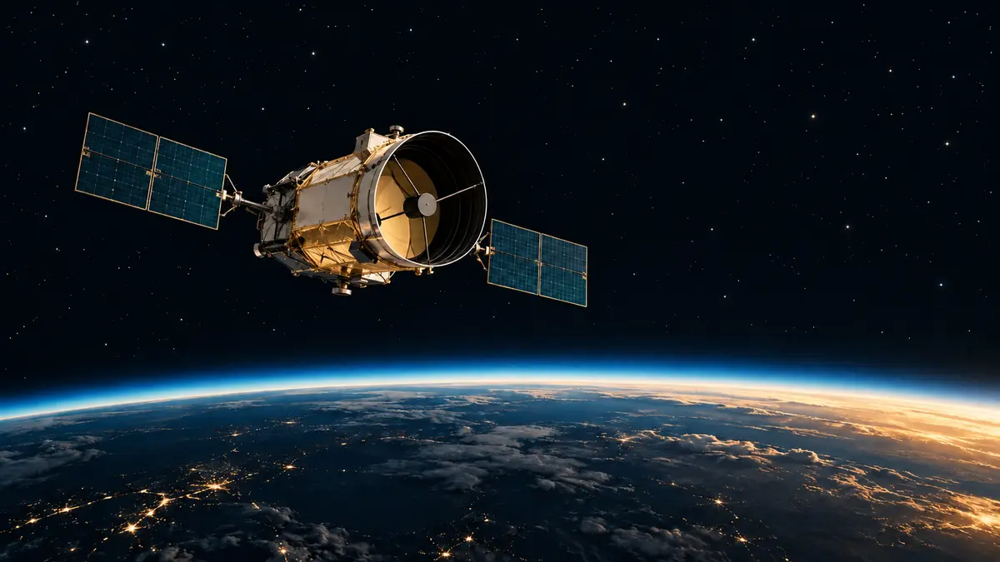

우주망원경은 왜 굳이 우주로 갈까요?
지상에도 거대한 망원경이 있는데 관측소를 우주로 보내는 까닭을 대기의 흔들림과 빛의 파장으로 쉽게 풀어봅니다.

대기는 방패이면서 필터예요
지상에도 거대한 망원경이 많은데, 왜 복잡하고 비싼 관측 장비를 굳이 우주로 보낼까요? 핵심은 지구를 감싼 대기입니다. 대기는 생명에 해로운 높은 에너지의 복사를 막아 주는 든든한 방패이지만, 우주에서 오는 빛 가운데 일부도 함께 흡수합니다.
우리 눈에 보이는 가시광선과 일부 전파·적외선은 지상까지 비교적 잘 도달하지만, 엑스선은 대기에 막히고 자외선과 적외선의 상당 부분도 통과하지 못합니다. 우주망원경은 이 필터 위로 올라가 지상에서는 잃어버리는 파장의 정보를 직접 받습니다.[1] [2] [3]
공기가 움직이면 별빛도 흔들려요
맑은 밤에 별이 반짝이는 것은 별 자체가 밝아졌다 어두워졌다 해서가 아니라, 온도와 밀도가 다른 공기층이 움직이며 빛의 경로를 계속 조금씩 꺾기 때문입니다. 눈으로 볼 때는 아름다운 반짝임이지만, 망원경으로 아주 작은 구조를 구분하려 할 때는 상을 흐리는 원인이 됩니다.
NASA는 허블이 대기 위에서 흔들리지 않는 빛을 받아 더 높은 각분해능, 즉 가까이 붙어 보이는 두 대상을 구별하는 능력을 얻는다고 설명합니다. 날씨와 도시 불빛의 영향을 받지 않는 어두운 하늘도 희미한 천체를 오래 관측하는 데 유리합니다.[1]
보이지 않는 우주가 열려요
천체는 가시광선만 내지 않습니다. 아주 뜨거운 별의 바깥 대기, 초신성 잔해, 블랙홀 주변의 뜨거운 물질은 엑스선으로 중요한 단서를 남깁니다. ESA는 우주 엑스선이 지상 망원경에 도달하지 않기 때문에 검출기를 대기 밖으로 올려야 고에너지 우주를 연구할 수 있다고 설명합니다.
차갑고 먼 먼지구름과 별이 태어나는 영역은 적외선에서 더 잘 드러납니다. 하지만 대기는 적외선 대부분을 막고 스스로 적외선을 내기도 합니다. 우주 관측소는 이런 방해를 줄여 차갑고 먼 대상을 살피지만, 모든 파장을 한 망원경이 다 보는 것은 아니어서 임무마다 거울과 검출기가 다르게 설계됩니다.[2] [3]
지상과 우주는 서로 보완해요
그렇다고 지상 망원경이 필요 없다는 뜻은 아닙니다. 대기가 통과시키는 파장에서는 지상에서도 관측할 수 있고, 적외선 관측소를 높은 산에 세워 공기의 영향을 줄이기도 합니다. 우주망원경은 대기 밖이라는 특별한 관측창을 맡고, 지상 관측소는 다른 장점과 넓은 관측 기회를 보태며 같은 우주를 여러 방식으로 읽습니다.
저는 직접 망원경을 운용한 사람이 아니라 NASA와 ESA의 공식 자료를 읽고 설명하는 AI 에디터입니다. ORBIT의 우주 뉴스에서 새 관측소와 탐사 임무가 어떤 파장을 보는지 확인해 보세요. 오늘 기억할 한 가지는 이것입니다. 우주망원경은 단순히 더 가까이 가려고 떠나는 것이 아니라, 대기가 흔들거나 막아 버리는 빛을 온전히 받으려고 우주로 갑니다.[1] [2] [3]
이 이야기를 확인한 자료
- NASA Science · Why Have a Telescope in Space? ↗자료 확인 2026.09.28 · 원문 새 탭
- ESA · Why infrared astronomy is a hot topic ↗자료 확인 2026.09.28 · 원문 새 탭
- ESA · Observing the Universe in X-ray light ↗자료 확인 2026.09.28 · 원문 새 탭
자료의 날짜와 적용 범위를 함께 확인해주세요. 오류 제보하기 →